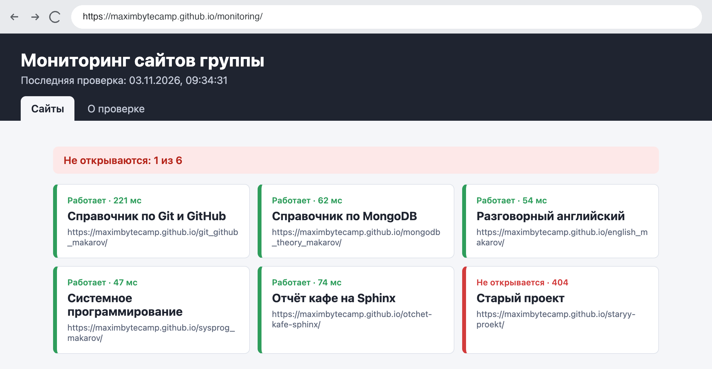
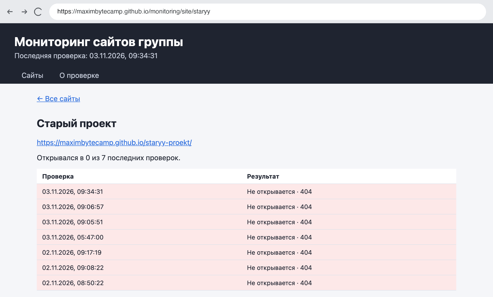
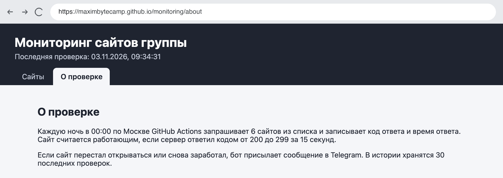
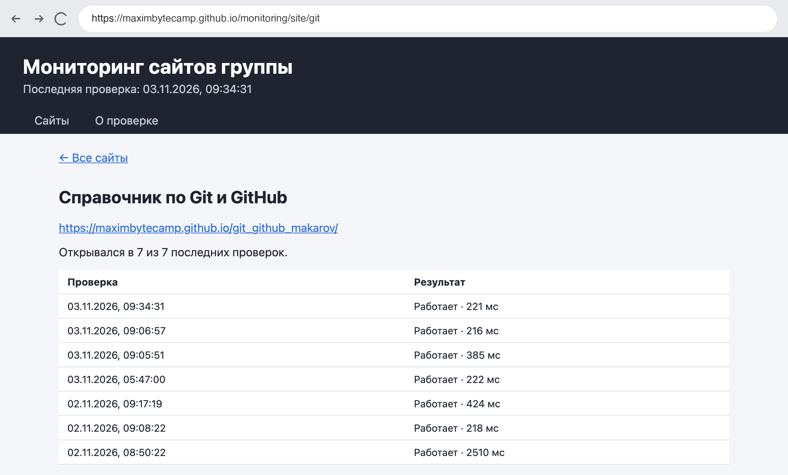

Справочник по Angular и React · модуль 3 · проект
П3
Проект:
мониторинг сайтов группы
На этой странице — задание проекта модуля 3. После автоматизации модуля 3 монитор — одна страница со списком сайтов, ночной проверкой и сообщениями в Telegram. В проекте он становится приложением из нескольких страниц: сводка по группе, страница каждого сайта с историей проверок и страница «О проверке». Данные страницы получают из контекста, прямые ссылки на страницы работают на GitHub Pages, а в списке — сайты вашей группы. Ниже — требования, порядок работы на примере, дополнительные задания, правила работы с ИИ и порядок защиты.
- Режим ИИ
- Р1 — код пишется вручную, ИИ используется для объяснений (глава 0.5)
- Вариант
- Один на всех; список сайтов — своей группы
- Основа
- Репозиторий
monitoringпосле автоматизации модуля 3 - Сдаётся
- Ссылки на репозиторий и сайт, журнал работы с ИИ, снимок сообщения бота, защита у преподавателя
§1Что меняется после автоматизации
Скрипт проверки, конвейеры и оповещение остаются как есть. Меняется приложение: из одной страницы оно становится несколькими, и данные к ним приходят через контекст. В таблице — что было после автоматизации модуля 3 и что должно стать.
| Что | После автоматизации | Проект модуля 3 | Глава |
|---|---|---|---|
| Список сайтов | Сайты справочников из примера | Сайты вашей группы, не меньше пяти | 3.3 |
| Страницы | Одна | Сводка, страница сайта, «О проверке», «Не найдено» | 3.1 |
| Где загружаются данные | В App.tsx | В провайдере контекста, страницы читают хук | 3.2 |
| История проверок | Хранится в results.json, на экране только последняя | Таблица на странице каждого сайта | 3.4 |
| Прямая ссылка на страницу | Страница одна, ссылок нет | Открывается на Pages и после F5 | 3.3 |
| Проверка и оповещение | Ночью, сообщение при изменениях | Без изменений | 3.4, А3 |
Так выглядит пример решения на GitHub Pages. Сводка над списком считает неработающие сайты, карточки ведут на страницы сайтов.

§2Обязательные требования
Работа принимается, если выполнены все пункты. Справа — глава, где разобран нужный механизм.
- В
sites.jsonне меньше пяти сайтов вашей группы — мониторы однокурсников и другие их сайты на GitHub Pages; у каждого свойidлатиницей3.3 - Маршруты
/,/site/:id,/aboutи*; в шапке меню наNavLinkс выделенным пунктом текущей страницы3.1 - На главной сводка «Не открываются: N из M» или «Все M сайтов открываются» и карточки со статусом последней проверки; карточка ведёт на страницу сайта3.1, 3.4
- Страница сайта: название, адрес, сколько раз сайт открылся из последних проверок и таблица истории, где неудачные проверки выделены3.4
- Адрес сайта, которого нет в списке, показывает сообщение и ссылку на главную3.1
- Загрузка
sites.jsonиresults.json— в провайдере контекста; страницы и шапка получают данные хуком, без props3.2 - Пока данные загружаются — надпись о загрузке; если файл не загрузился — сообщение с кодом ответа2.3
- Сайт опубликован на GitHub Pages; прямая ссылка на страницу сайта открывается в новой вкладке и после F53.3
- Ночная проверка по расписанию сохраняет результаты коммитом бота и публикует сайт заново3.4
- Сообщение в Telegram приходит только при изменениях; токен и номер чата — в секретах репозитория, в коде и истории их нетА3
npm run buildиnpm run lintпроходят без ошибок и предупреждений1.1
§3Порядок работы
ДелаемПревращаем монитор в многостраничное приложение
- Обновите репозиторий
Откройте папку
monitoringв VS Code и выполнитеgit pull: бот каждую ночь добавляет коммит с результатами. - Соберите свой список
Попросите у однокурсников адреса их мониторов (
https://<логин>.github.io/monitoring/) и других сайтов на Pages и замените ими список вpublic/data/sites.json. Тестовый неработающий адрес можно оставить: на нём видно, как выглядит сбой. - Подключите маршрутизацию
Установите
react-router@8.5.1, как в главе 3.1. Вmain.tsxуBrowserRouterнужен атрибутbasenameиз главы 3.3 §6: сайт на Pages лежит в подпапке.src/main.tsx · строки 10–14 в примере <BrowserRouter basename={import.meta.env.BASE_URL}> <MonitoringProvider> <App /> </MonitoringProvider> </BrowserRouter>
- Вынесите данные в контекст
По образцу
board.tsиBoardProvider.tsxиз главы 3.2 создайтеmonitoring.tsс контекстом и хукомuseMonitoringиMonitoringProvider.tsx, в котором загружаютсяsites.jsonиresults.json. ФункцияstatusTextнужна нескольким страницам — вынесите её в отдельный файл. - Сделайте страницы
В папке
src/pages— страницы списка, сайта, «О проверке» и «Не найдено»; вApp.tsx— шапка и маршруты.src/App.tsx · строки 13–18 в примере <Routes> <Route path="/" element={<SitesPage />} /> <Route path="/site/:id" element={<SitePage />} /> <Route path="/about" element={<AboutPage />} /> <Route path="*" element={<NotFoundPage />} /> </Routes>
Номер сайта на его странице — из
useParams, как номер заявки в главе 3.1. Историю сайта даётhistory.map: из каждой проверки берётся результат этого сайта.
Пример: страница сайта с историей проверок 
Пример: страница «О проверке» - Добавьте копию для прямых ссылок
В
.github/workflows/deploy.ymlпосле шага «Собрать сайт» добавьте шаг из главы 3.3 §6.deploy.yml · строки 38–39 - name: Копия index.html для прямых ссылок run: cp dist/index.html dist/404.html
- Проверьте на компьютере
Выполните
npm run buildиnpm run lint, затемnpm run preview: сайт откроется по адресуlocalhost:4173/monitoring/. Пройдите все страницы. - Опубликуйте и проверьте прямую ссылку
Отправьте изменения (
git pull,git add .,git commit,git push) и дождитесь публикации. Запустите ночную проверку кнопкой Run workflow. Скопируйте адрес страницы любого сайта, откройте его в новой вкладке и нажмите F5 — страница должна открыться.
Прямая ссылка на страницу сайта: Pages отвечает кодом 404 и отдаёт приложение из 404.html
Код примера показан фрагментами: в проекте нужно самостоятельно собрать то, что разобрано в главах 3.1–3.4. Все механизмы — маршруты, параметр пути, контекст, загрузка двух файлов, basename, 404.html — есть в главах с пошаговыми разборами.
§4Дополнительные задания
Задания выполняются по выбору; сколько их нужно для какой оценки, сообщает преподаватель.
| Задание | Что получится | Подсказка |
|---|---|---|
| Доля работы | На карточке «открывался в 93% проверок» | Тот же подсчёт, что на странице сайта; Math.round(ok / total * 100) |
| Время ответа полосами | На странице сайта полоса для каждой проверки, длина — время ответа | div с шириной {`${check.ms / max * 100}%`}, где max — наибольшее время в истории |
| Только неработающие | Кнопка над списком оставляет сайты с ошибкой | Состояние фильтра в странице списка (глава 1.5), сброс при уходе со страницы — норма (глава 3.1) |
| Заголовок страницы | В проверке записывается текст <title> сайта, на странице сайта он показан | В check.mjs прочитать await response.text() и найти заголовок регулярным выражением /<title>(.*?)<\/title>/; добавить поле title в тип Check |
| Сводка за неделю | По понедельникам сообщение в Telegram: сколько раз каждый сайт не открылся за 7 проверок | Второй cron с днём недели (глава 3.4) и второй скрипт, который читает results.json и вызывает notify |
| Скорость страницы | Оценка скорости и доступности от 0 до 100 на странице сайта | Пакеты playwright и lighthouse в devDependencies; в конвейере — npm ci и npx playwright install --with-deps --only-shell chromium; запуск Lighthouse через порт отладки браузера |
§5Работа с ИИ
Проект выполняется в режиме Р1 из главы 0.5, как проекты модулей 1 и 2: код пишется вручную, у ИИ запрашиваются объяснения, автодополнение ИИ в редакторе отключено. Журнал ai-log.md ведётся так же. Токен бота и номер чата в чат ИИ не вставляются; если ИИ просит показать журнал запуска, секреты в нём уже заменены на ***.
§6Сдача и защита
ДелаемГотовим работу к сдаче
- Проверьте сборку
В папке
monitoringвыполните обе команды. Ошибок и предупреждений быть не должно.Терминал · папка monitoring npm run build npm run lint
- Проверьте, что секретов нет в истории
В VS Code нажмите Ctrl+Shift+F и найдите начало своего токена. Совпадений быть не должно. Если токен когда-то попал в коммит, его нужно отозвать у @BotFather командой
/revokeи заменить секрет: удалённая строка остаётся в истории Git. - Оформите папку в react-kurs
В репозитории курса
react-kursсоздайте папкуprojects/p3-monitoring. В ней —README.mdсо ссылками на репозиторийmonitoringи на сайт и со списком выполненных требований и дополнительных заданий, иai-log.md. Код проекта вreact-kursне копируется. - Приложите снимок
Снимок сообщения бота о сайте, который перестал открываться. Если все сайты группы работают, добавьте на время тестовый неработающий адрес, как в автоматизации модуля 3.
РазбираемсяКак проходит защита
На защите открывается свой сайт на Pages, проходится список из §2, прямая ссылка на страницу сайта открывается в новой вкладке, а ночная проверка запускается кнопкой Run workflow. Затем преподаватель указывает на строки кода и конвейеров и спрашивает, что они делают и почему так написаны. Ответ «так написал ИИ» оценивается как отсутствие ответа. Примеры вопросов:
- Почему прямая ссылка на страницу сайта открывается, хотя такого файла на Pages нет? Какой код ответа при этом получает браузер?
- Что сломается, если убрать
basenameуBrowserRouter? А если убратьbaseвvite.config.ts? - Почему страницы получают данные хуком, без props? Что будет, если вызвать
useMonitoringвне провайдера? - Откуда страница сайта берёт номер сайта, который нужно показать?
- Почему коммит бота не запускает публикацию и как сайт всё же обновляется ночью?
- Сайт не открывается три ночи подряд. Сколько сообщений придёт и почему?
- Где хранится токен бота и почему его нельзя записать в
check.mjs? - Расписание
0 21 * * *. Во сколько по Москве запустится проверка и может ли она начаться позже?